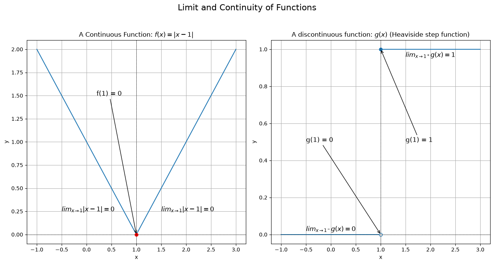

Continuity
A function $f(z)$ is said to be continuous at a point $z_0$ in its domain if the following three conditions are satisfied:
- $f(z_0)$ is defined.
- $\lim_{z \to z_0} f(z)$ exists.
- $\lim_{z \to z_0} f(z) = f(z_0)$.
Condition 3 already contains the first two, since it can only hold if $f(z_0)$ is defined and the limit exists. It can also be written in the $\epsilon$–$\delta$ form: for each positive number $\epsilon$, there is a positive number $\delta$ such that: $|f(z) - f(z_0)| < \epsilon$ whenever $|z - z_0| < \delta$ (with $z$ in the domain). A function of a complex variable is said to be continuous in a region $R$ if it is continuous at each point of $R$.

import numpy as np
import matplotlib.pyplot as plt
plt.figure(figsize=(13, 7))
# a function that is continuous at x = 1
plt.subplot(1, 2, 1)
f = lambda x: np.abs(x - 1)
x = np.linspace(-1, 3, 100)
y = f(x)
plt.plot(x, y)
plt.plot(1, 0, 'ro')
plt.annotate('f(1) = 0', xy=(1, 0), xytext=(0.2, 1.5), arrowprops=dict(arrowstyle="->"), fontsize=12)
plt.text(-0.5, 0.25, '$lim_{x \\to 1} |x - 1| = 0$', fontsize=12)
plt.text(1.5, 0.25, '$lim_{x \\to 1} |x - 1| = 0$', fontsize=12)
plt.title('A Continuous Function: $f(x) = |x - 1|$')
# a function that is not continuous at x = 1 (Heaviside step function)
plt.subplot(1, 2, 2)
left, right = x < 1, x >= 1
plt.plot(x[left], np.zeros(left.sum()), color="C0")
plt.plot(x[right], np.ones(right.sum()), color="C0")
plt.plot(1, 0, "o", mfc="white", color="C0") # open: not attained
plt.plot(1, 1, "o", color="C0")
plt.annotate('g(1) = 1', xy=(1, 1), xytext=(1.5, 0.5), arrowprops=dict(arrowstyle="->"), fontsize=12)
plt.annotate('g(1) = 0', xy=(1, 0), xytext=(-0.5, 0.5), arrowprops=dict(arrowstyle="->"), fontsize=12)
plt.text(0.5, 0.01, '$lim_{x \\to 1^-} g(x) = 0$', fontsize=12, verticalalignment='bottom', horizontalalignment='right')
plt.text(1.5, 0.95, '$lim_{x \\to 1^+} g(x) = 1$', fontsize=12, verticalalignment='bottom', horizontalalignment='left')
plt.title("A discontinuous function: $g(x)$ (Heaviside step function)")
for ax in plt.gcf().axes:
ax.axhline(0, color="black", lw=0.5, ls="--")
ax.axvline(1, color="black", lw=0.5, ls="--")
ax.set_xlabel("x")
ax.set_ylabel("y")
ax.grid(True)
plt.suptitle("Limit and Continuity of Functions", fontsize=16)
plt.tight_layout(rect=[0, 0, 1, 0.95])
plt.show
A composite of continuous functions is continuous. That is, if $f(z)$ is continuous at $z_0$ and $g(z)$ is continuous at $f(z_0)$, then $g(f(z))$ is continuous at $z_0$. Also, if $f(z)$ and $g(z)$ are continuous at $z_0$ and defined for all $z$ in some neighbourhood $|z - z_0| < \delta$ of $z_0$, then $f(z) + g(z)$, $f(z)g(z)$, and $\frac{f(z)}{g(z)}$ (if $g(z_0) \neq 0$) are also continuous at $z_0$. In view of the above, we can say that a polynomial function is continuous everywhere in the complex plane. A rational function is continuous at all points in its domain.
If a function $f(z)$ is continuous and non-zero at a point $z_0$, then $f(z) \neq 0$ throughout some neighbourhood of $z_0$. This is because if $f(z_0) \neq 0$, then there exists a $\delta > 0$ such that $|f(z) - f(z_0)| < |f(z_0)|$ whenever $|z - z_0| < \delta$. By the triangle inequality, $|f(z)| \geq |f(z_0)| - |f(z) - f(z_0)| > 0$ in that neighbourhood.
Continuity is closely related to the continuity of the real and imaginary parts of a complex function. If $f(z) = u(x, y) + iv(x, y)$, where $u$ and $v$ are real-valued functions of two real variables $x$ and $y$, then $f(z)$ is continuous at $z_0 = x_0 + iy_0$ if and only if both $u(x, y)$ and $v(x, y)$ are continuous at $(x_0, y_0)$. This follows because $|u - u_0|$ and $|v - v_0|$ are each at most $|f(z) - f(z_0)|$, while $|f(z) - f(z_0)| \leq |u - u_0| + |v - v_0|$.
If a function $f(z)$ is continuous on a region $R$ that is both closed and bounded, there exists a non-negative real number $M$ such that $|f(z)| \leq M$ for all $z$ in $R$. This is a consequence of the fact that $|f(z)|$ is a real-valued continuous function, and a real-valued continuous function on a closed and bounded region attains its maximum and minimum values. We can take $M$ to be the maximum value of $|f(z)|$ on $R$.
Derivatives
The derivative of a function $f(z)$ at a point $z_0$ in its domain is defined as the limit: $$f'(z_0) = \lim_{z \to z_0} \frac{f(z) - f(z_0)}{z - z_0}$$ if this limit exists. If $f'(z_0)$ exists, we say that $f(z)$ is differentiable at $z_0$.
For this to make sense, $f$ must be defined throughout a neighbourhood of $z_0$. Then the number $f(z_0 + \Delta z)$ is defined for all sufficiently small $|\Delta z|$.
We can introduce the increment $\Delta z = z - z_0$ and write the derivative as: $$f'(z_0) = \lim_{\Delta z \to 0} \frac{f(z_0 + \Delta z) - f(z_0)}{\Delta z}.$$ If $f'(z_0)$ exists, we can write: $$f(z_0 + \Delta z) - f(z_0) = f'(z_0) \Delta z + \epsilon(\Delta z) \Delta z,$$ where $\epsilon(\Delta z) \to 0$ as $\Delta z \to 0$. This is the complex analogue of the increment theorem for real functions.
Differentiability and continuity are closely linked. If $f(z)$ is differentiable at $z_0$, then it is continuous at $z_0$. This follows from the increment formula above. Taking the limit as $\Delta z \to 0$ gives: $$\lim_{\Delta z \to 0} \left[ f(z_0 + \Delta z) - f(z_0) \right] = \lim_{\Delta z \to 0} \left[ f'(z_0) \Delta z + \epsilon(\Delta z) \Delta z \right] = 0,$$ since both terms on the right go to $0$. Thus, $\lim_{z \to z_0} f(z) = f(z_0)$, which is the definition of continuity at $z_0$.
However, the converse is not true: a function can be continuous at a point but not differentiable there. For example, the function $f(z) = |z|$ is continuous at $z = 0$ but not differentiable there. At $z_0 = 0$ the difference quotient is $\frac{|\Delta z|}{\Delta z}$. Along the positive real axis ($\Delta z = t > 0$) it equals $1$, but along the imaginary axis ($\Delta z = it$, $t > 0$) it equals $\frac{t}{it} = -i$. The two paths give different values, so the limit does not exist.